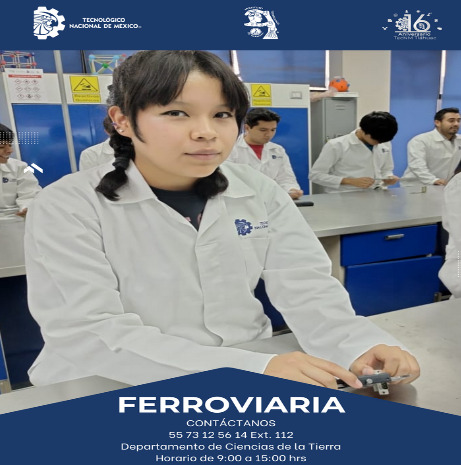

Podemos darle un vistazo al indice del Tecnm Tlahuac
"LA ESENCIA DE LA GRANDEZA RADICA EN LAS RAÍCES"
"

Podemos darle un vistazo al objetivo general del Tecnm Tlahuac
"LA ESENCIA DE LA GRANDEZA RADICA EN LAS RAÍCES"
OBJETIVO GENERAL
Formar profesionales con sentido humano y visión analítica
e innovadora; con capacidad y habilidad de diseñar, construir
y mantener sistemas ferroviarios, en un marco de desarrollo
sostenible, con ética y compromiso social.
Podemos darle a el perfil de egreso del Tecnm Tlahuac
PERFIL DE EGRESO1.- Planea, construye y controla procesos de instalación,
actualización, operación y mantenimiento de los sistemas ferroviarios,
conforme a la normatividad vigente considerando el impacto ambiental.
2.- Resuelve problemas relacionados con la industria
ferroviaria, utilizando herramientas matemáticas, técnicas
de simulación y modelos de análisis, atendiendo necesidades
sociales, actuales y emergentes.
3.- Utiliza y adapta nuevas tecnologías para la mejora en los procesos de
sistemas ferroviarios.
4.- Emplea técnicas de control de calidad para optimizar
el uso de los recursos en los sistemas ferroviarios
5.- Posee capacidad de trabajo en equipo y liderazgo que
facilite la solución de problemas.
6.- Posee capacidad de trabajo en equipo y liderazgo que
facilite la solución de problemas.
7.- Desarrolla y ejecuta proyectos con responsabilidad social,
sentido crítico y autocrítico.
Podemos darle un vistazo a la reticula del Tecnm Tlahuac ❤️